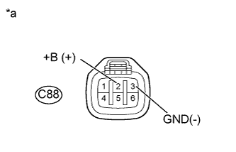

DTC P1271 Неисправность цепи регулирования подачи топлива (привод EDU) |
DTC P1272 Неисправность регулятора давления в топливной системе |
| Режим поездки при обнаружении DTC | Условие обнаружения DTC | Неисправный участок |
| Выключатель зажигания в состоянии ON (ВКЛ) (IG) → OFF (ВЫКЛ) и Совершите поездку на автомобиле со скоростью 50 км/час (31 миля в час) на 3-й передаче, а затем замедлите движение, отпустив педаль акселератора. | Выполняется любое из следующих условий (логика диагностирования за 1 поездку):
|
|
| Режим поездки при обнаружении DTC | Условие обнаружения DTC | Неисправный участок |
| Выключатель зажигания в состоянии ON (ВКЛ) (IG) → OFF (ВЫКЛ) | Клапан сброса давления не открывается. После выключения зажигания фактическая скорость снижения давления отличается от расчетной (логика диагностирования за 2 поездки). |
|
| № DTC | Параметры из Data List |
| P1271 |
|
| P1272 |
| Частота вращения коленчатого вала двигателя | Давление в топливной системе (кПа) |
| Холостой ход | Значение Fuel Press находится в пределах интервала "Target Common Rail Pressure" +/- 5000 кПа. |
| 2500 об/мин (двигатель работает без нагрузки) |
| Условие | Fuel Press (на холостом ходу) | Fuel Press (через 1 с после остановки двигателя) |
| Клапан сброса давления работает нормально | 35000 кПа | 500 кПа |
| Обрыв в цепи клапана сброса давления | 35000 кПа | 30000 кПа |
| Необходимые датчики | Электронный блок привода форсунок |
| Продолжительность работы | Непрерывно |
| Продолжительность | 3 с |
| Работа контрольной лампы MIL | 1 поездка |
| Необходимые датчики | Датчик давления в топливной системе |
| Продолжительность работы | Один раз в течение одной поездки |
| Продолжительность | 1 с |
| Работа контрольной лампы MIL | 2 поездки |
| Технические характеристики |
| Автомобиль движется со скоростью 50 км/час (31 миля в час) на 3-й передаче, а затем замедляет движение в результате полного отпускания педали акселератора (последовательность повторяется 3 раза). |
| Параметр | Технические характеристики | |
| Минимальное значение | Максимальное значение | |
| Давление в топливной системе | 30000 кПа (306 кгс/см2, 4350 фунтов на кв. дюйм) | - |
| Температуры топлива | 0°C (32°F) | - |
| Напряжение аккумуляторной батареи | 11 В | - |
| При неисправности в датчике давления топлива, цепи клапана сброса давления или датчике температуры топлива система контроля не работает. | ||
| Технические характеристики |
| Во время замедления заданное число раз подряд не поступают сигналы подтверждения от электронного блока привода форсунок, хотя ЕСМ регулярно передает команды. |
| Технические характеристики |
| После выключения зажигания в топливной системе остается давление ниже заданного уровня. |
| 1.ПРОВЕРЬТЕ, ОТОБРАЖАЕТСЯ ЛИ DTC СНОВА |
Подсоедините портативный диагностический прибор к DLC3.
Сбросьте коды DTC (Нажмите здесь).
Выключите зажигание и подождите не менее 30 с.
Включите зажигание (IG).
Совершите поездку на автомобиле со скоростью 50 км/час (31 миля в час) на 3-й передаче, а затем замедлите движение, полностью отпустив педаль акселератора. Выполните данное действие три раза.
Войдите в следующие меню: Powertrain / Engine and ECT / DTC.
Считайте ожидающие обработки коды DTC.
| Результат | Следующий шаг |
| P1272 | А |
| P1271 | B |
| P1271 и P1272 | B |
| Выводятся другие DTC | C |
|
| ||||
|
| ||||
| А | |
| 2.ПРОВЕРЬТЕ ТОПЛИВНУЮ СИСТЕМУ COMMON RAIL В СБОРЕ (РАБОТУ КЛАПАНА СБРОСА ДАВЛЕНИЯ) |
Проверьте топливную систему Common Rail в сборе (Нажмите здесь).
|
| ||||
|
| ||||
| 3.ПРОВЕРЬТЕ ТОПЛИВНУЮ СИСТЕМУ COMMON RAIL В СБОРЕ (СОПРОТИВЛЕНИЕ КЛАПАНА СБРОСА ДАВЛЕНИЯ) |
Проверьте топливную систему Common Rail в сборе (Нажмите здесь).
|
| ||||
| OK | |
| 4.ПРОВЕРЬТЕ ЖГУТ ПРОВОДОВ И РАЗЪЕМ (КЛАПАН СБРОСА ДАВЛЕНИЯ – ЭЛЕКТРОННЫЙ БЛОК ПРИВОДА ФОРСУНОК) |
Отсоедините разъем электронного блока привода форсунок.
Отсоедините разъем клапана сброса давления.
Измерьте сопротивление в соответствии со значениями, приведенными в таблице ниже.
| Контакты для подключения диагностического прибора | Состояние | Заданные условия |
| C72-2 - C88-4 (RLF+) | Всегда | Менее 1 Ом |
| C72-1 - C99-1 (RLF-) | Всегда | Менее 1 Ом |
| Контакты для подключения диагностического прибора | Состояние | Заданные условия |
| C72-2 или C88-4 (RLF+) - масса | Всегда | 10 кОм или более |
| C72-1 или C99-1 (RLF-) - масса | Всегда | 10 кОм или более |
Подсоедините разъем электронного блока привода форсунок.
Подсоедините разъем клапана сброса давления.
|
| ||||
| OK | |
| 5.ПРОВЕРЬТЕ ЖГУТ ПРОВОДОВ И РАЗЪЕМ (ECM - ЭЛЕКТРОННЫЙ БЛОК ПРИВОДА ФОРСУНОК) |
Отсоедините разъем электронного блока привода форсунок.
Отсоедините разъем ЭБУ.
Измерьте сопротивление в соответствии со значениями, приведенными в таблице ниже.
| Контакты для подключения диагностического прибора | Состояние | Заданные условия |
| C89-2 (PRD) - C90-19 (PRD) | Всегда | Менее 1 Ом |
| C89-5 (INJF) - C90-20 (INJF) | Всегда | Менее 1 Ом |
| Контакты для подключения диагностического прибора | Состояние | Заданные условия |
| C89-2 (PRD) или C90-19 (PRD - масса | Всегда | 10 кОм или более |
| C89-5 (INJF) или C90-20 (INJF) - масса | Всегда | 10 кОм или более |
Подсоедините разъем электронного блока привода форсунок.
Подсоедините разъем ECM.
|
| ||||
| OK | |
| 6.ПРОВЕРЬТЕ ЭЛЕКТРОННЫЙ БЛОК ПРИВОДА ФОРСУНОК (ЦЕПЬ ПИТАНИЯ) |
|  |
Отсоедините разъемы электронных блоков привода форсунок.
Измерьте напряжение в соответствии со значениями, приведенными в таблице.
| Контакты для подключения диагностического прибора | Положение переключателя | Заданные условия |
| C88-2 (+B) - C88-3 (GND) | Выключатель зажигания в состоянии ON (ВКЛ) (IG) | 11 - 14 В |
| *a | Вид спереди разъема со стороны жгута проводов: (к электронному блоку привода форсунок) |
Подсоедините разъем электронного блока привода форсунок.
|
| ||||
| OK | |
| 7.ЗАМЕНИТЕ ЭЛЕКТРОННЫЙ БЛОК ПРИВОДА ФОРСУНОК |
Замените электронный блок привода форсунок (Нажмите здесь).
| ДАЛЕЕ | |
| 8.ПРОВЕРЬТЕ, ВОЗОБНОВЛЯЕТСЯ ЛИ ВЫВОД DTC (DTC P1271 И/ИЛИ P1272) |
Подсоедините портативный диагностический прибор к DLC3.
Сбросьте коды DTC (Нажмите здесь).
Выключите зажигание и подождите не менее 30 с.
Включите зажигание (IG).
Совершите поездку на автомобиле со скоростью 50 км/час (31 миля в час) на 3-й передаче, а затем замедлите движение, полностью отпустив педаль акселератора. Выполните данное действие три раза.
Войдите в следующие меню: Powertrain / Engine and ECT / DTC.
Считайте ожидающие обработки коды DTC.
Войдите в следующие меню: Powertrain / Engine and ECT / Utility / All Readiness.
Введите DTC P1271 и P1272.
Проверьте результат проверки DTC.
| Информация на дисплее прибора | Результат | Следующий шаг |
| Pending DTC | Выводится код P1271 или P1272, либо оба кода | B |
| All Readiness | NORMAL | А |
| ABNORMAL | B |
|
| ||||
| А | ||
| ||
| 9.ОТРЕМОНТИРУЙТЕ ИЛИ ЗАМЕНИТЕ ЖГУТ ПРОВОДОВ ИЛИ РАЗЪЕМ |
Отремонтируйте или замените жгут проводов или разъем.
|
| ||||
| 10.ПЕРЕЙДИТЕ К ЦЕПИ ФОРСУНКИ |
Перейдите к цепи форсунки (Нажмите здесь).
|
| ||||
| 11.ЗАМЕНИТЕ ECM |
Замените ECM (Нажмите здесь).
|
| ||||
| 12.ЗАМЕНИТЕ ТОПЛИВНУЮ СИСТЕМУ COMMON RAIL В СБОРЕ |
Замените топливную систему Common Rail в сборе (Нажмите здесь).
| ДАЛЕЕ | |
| 13.УДАЛИТЕ ВОЗДУХ ИЗ ТОПЛИВНОЙ СИСТЕМЫ |
Удалите воздух из топливной системы (Нажмите здесь).
| ДАЛЕЕ | |
| 14.ПРОВЕРЬТЕ, УСТРАНЕНА ЛИ ДОЛЖНЫМ ОБРАЗОМ НЕИСПРАВНОСТЬ |
Подсоедините портативный диагностический прибор к DLC3.
Удалите коды DTC (Нажмите здесь).
Выключите зажигание и подождите не менее 30 с.
Включите зажигание (IG).
Совершите поездку на автомобиле со скоростью 50 км/час (31 миля в час) на 3-й передаче, а затем замедлите движение, полностью отпустив педаль акселератора. Выполните данное действие три раза.
Войдите в следующие меню: Powertrain / Engine and ECT / DTC.
Убедитесь, что ожидающий обработки DTC больше не выводится.
Войдите в следующие меню: Powertrain / Engine and ECT / Utility / All Readiness.
Введите DTC P1271 и P1272.
Проверьте результат проверки DTC.
| ДАЛЕЕ | ||
| ||